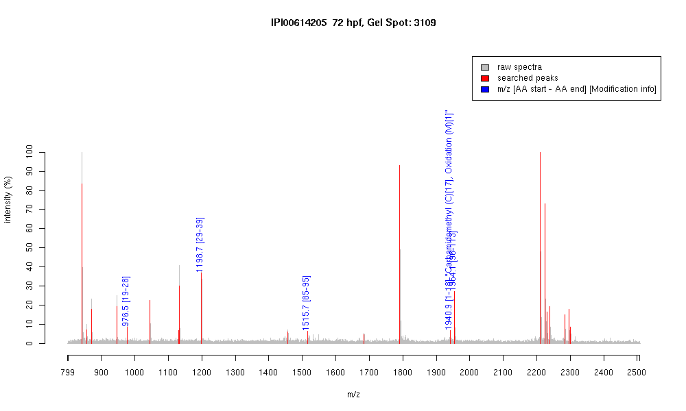

| Name | PREDICTED: similar to beta-cytoplasmicactin2 isoform 1 |
|---|---|
| MW | 29616.8 |
| PI | 5.02 |
| Mascot Protein Score | 75 |
| Masses (matched / unmatched) | 5 / 26 |

| Peptide | MZ (calc) | MZ (observed) | Error (DA) | Error (PPM) | Start | Stop | Modifications |
|---|---|---|---|---|---|---|---|
| AGFAGDDAPR | 976.4482 | 976.4504 | 0.0022 | 2 | 19 | 28 | |
| AVFPSIVGRPR | 1198.7054 | 1198.6964 | -0.009 | -8 | 29 | 39 | |
| IWHHTFYNELR | 1515.7491 | 1515.7317 | -0.0174 | -11 | 85 | 95 | |
| MDDEIAALVVDNGSGMCK | 1940.8398 | 1940.9279 | 0.0881 | 45 | 1 | 18 | "Carbamidomethyl (C)[17], Oxidation (M)[1]" |
| VAPEEHPVLLTEAPLNPK | 1954.0643 | 1954.062 | -0.0023 | -1 | 96 | 113 |